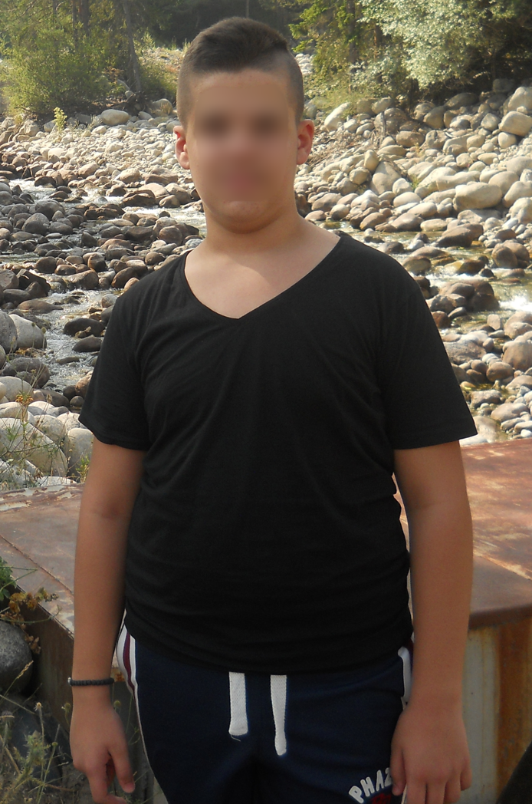
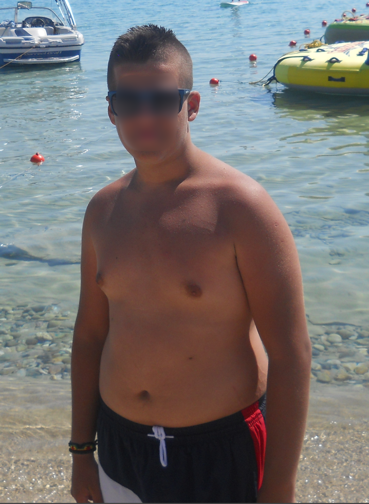
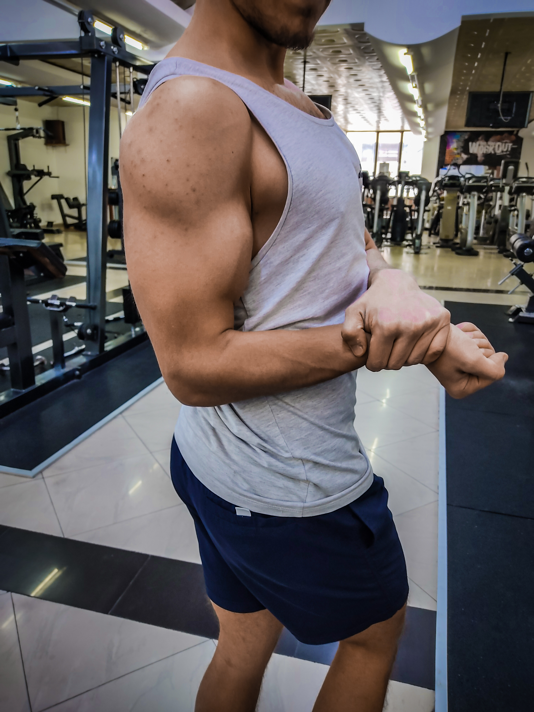
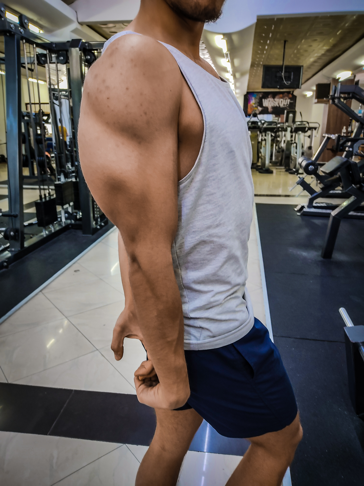
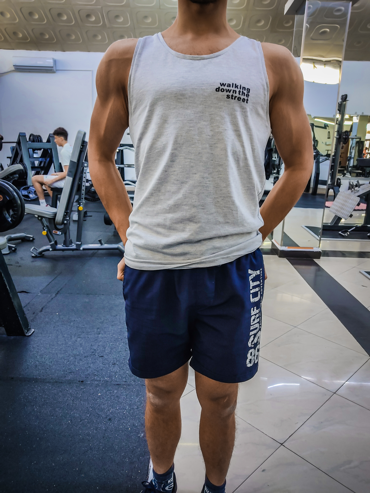
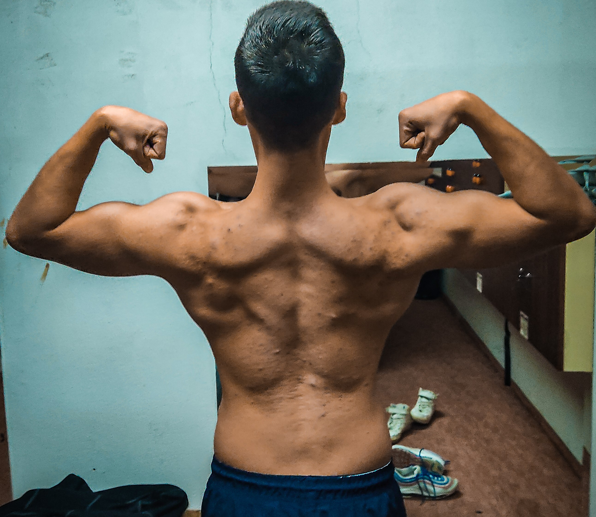
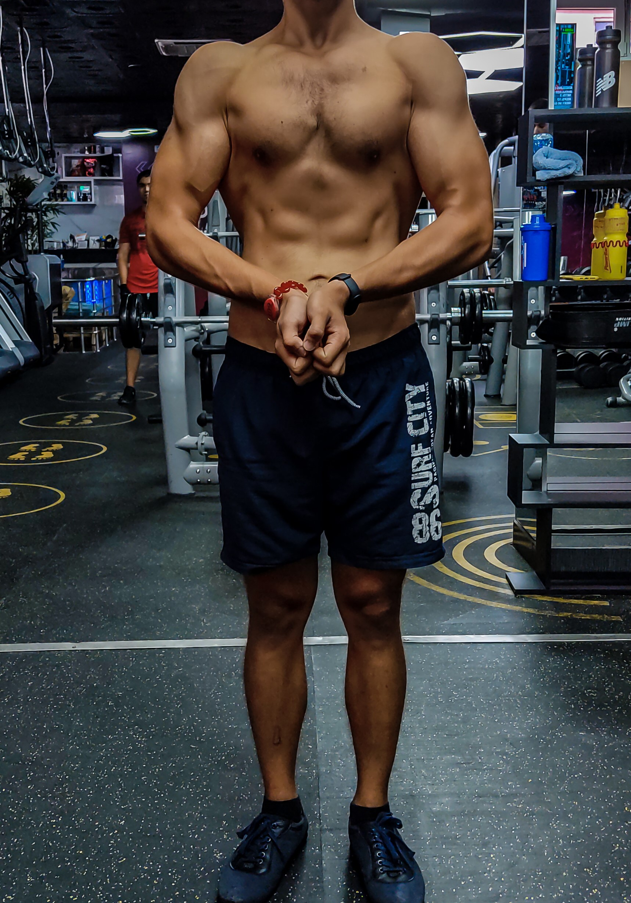
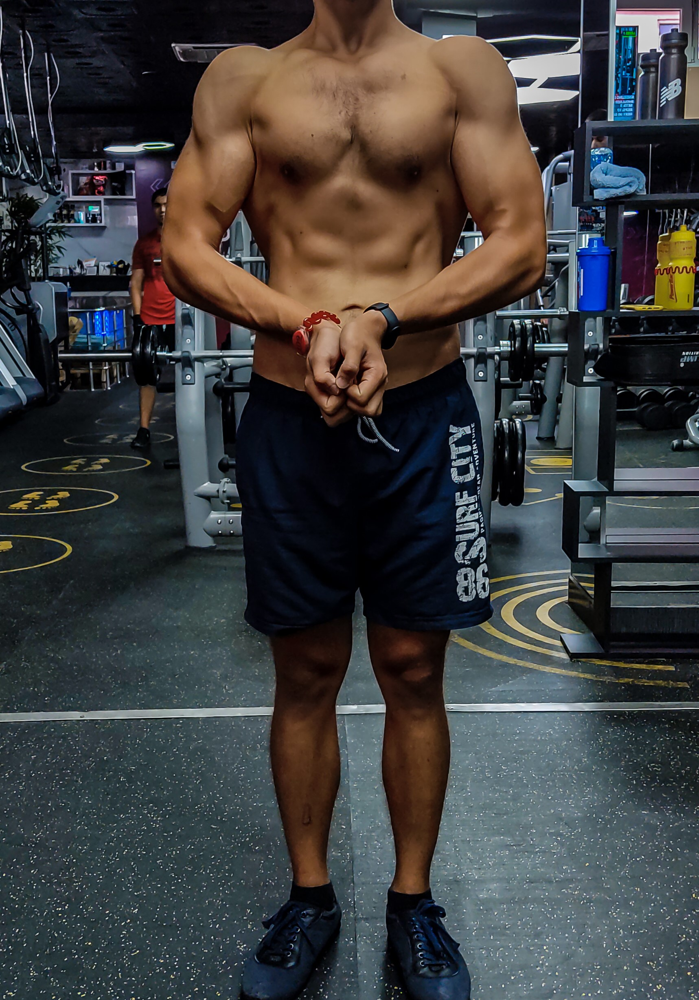

As a child I always enjoyed eating delicious meals. I had a big appetit and didn't care how much I eat. Also, I have a really sweet tooth. I can say that desserts are my weak point. I was eating big dessert after every meal. Easily I've got down a whole 100g chocolate bars. The heaviest I've been is 93kg(205lbs) on age of 14.

But when I was 15, I decided to change my habits. Everything stared in the spring of 2018. First I quit sweets, soda and bread. I also started running. After a couple of months I've already lost over 20kg, and till the end of that summer I was down 25kg.
  The following year I started working out at home, mostly body weight exercises and exercise with a 8kg dumbbell I had. Also, I learnt a lot of things about nutrition. I found out about calorie counting, what I can say is the best diet plan anyone can follow. You can basically eat whatever you like and the only thing you should care about is hitting your daily calorie/macro goal.



In september 2019 I stared going to the gym, and since then I haven't taken a longer break from the gym. Also, I started running seriously in 2022, and I participated in a few races. I've run 10km races and half-marathons. Currently, my best 10km time is 47:22 and half-marathon 1:50:19. Now I am preparing for a marathon in October 2023. If someone tells you running will kill your gains, don't believe them. You can still gain muscle mass with running on a daily basis.
 

During the summer of 2021 I did a longer cut. I got quite lean, I was bellow 65kg, the previous year I was even lower body weight, I was 62kg (30kg lower than what I used to be), but this year I've built some muscle mass and looked better. Here are few photos of that.